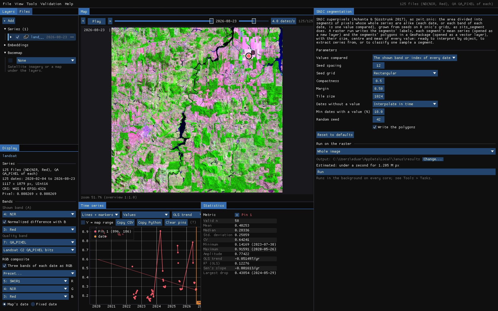
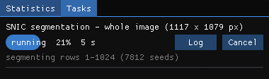
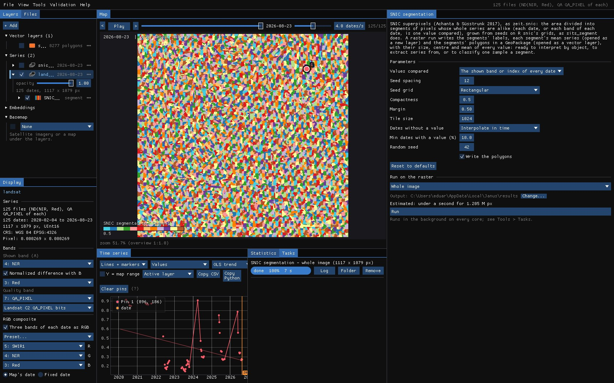
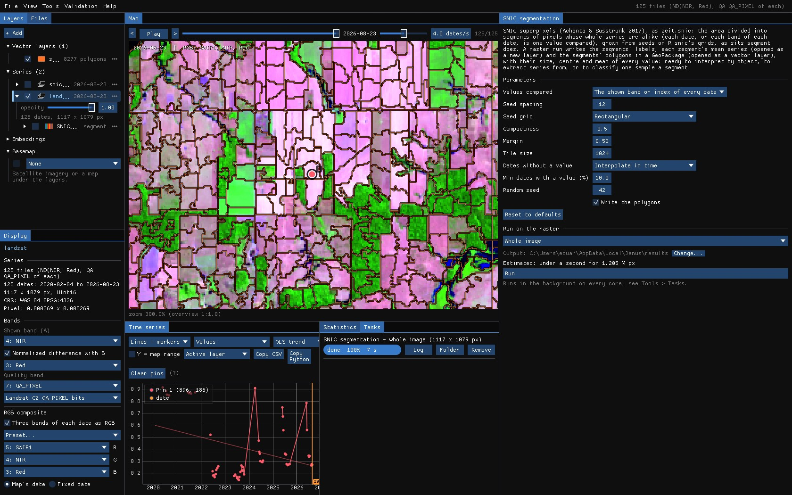
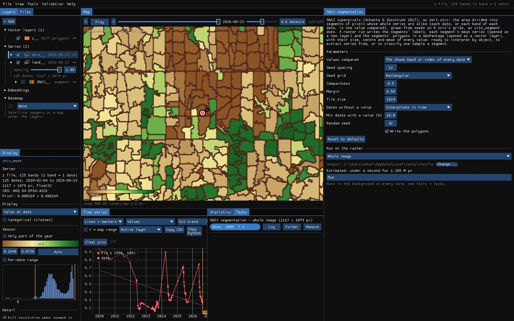
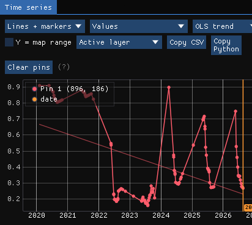

01The idea
SNIC (Simple Non-Iterative Clustering, Achanta & Süsstrunk 2017) grows superpixels from seeds on a grid. Each seed takes the pixel next to it that is closest, in a distance that adds how alike the values are and how near the pixel is; a priority queue decides which segment grows next, so every pixel is visited once.
In Janus the values compared are a pixel's whole series: every date of the band shown (or every band of every date). Two pixels are alike when they had the same history, not only the same colour on one date: a pasture cleared in 2022 and a pasture cleared in 2010 end in different segments. This is how sits_segment segments a data cube in R, with the seed grids of R's snic package.
02The example
The Landsat 8/9 series of the CCDC guide: 125 dates from February 2020 to August 2026, 30 m, 1117 × 1079 pixels of Rondônia, where forest is cleared for pasture. The map shows SWIR1, NIR and red of the last date (forest green, pasture pink); the chart, the NDVI of the pin. The quality band (QA_PIXEL) removes clouds and shadows, so in the rainy season many dates have no value.
03The parameters
Tools → SNIC segmentation.


| Parameter | Default | What it does |
|---|---|---|
| Values compared | shown | The series on the map (the band or index of every date, the quality band applied), or every band of every date (more memory and time). |
| Seed spacing | 10 | Pixels between seeds: about the side of a segment. |
| Seed grid | rectangular | R snic's grids: rectangular, diamond, hexagonal or random. |
| Compactness | 0.5 | Larger: more regular segments; smaller: segments follow the data. In the values' units: 0.5 for an index in 0–1, about 5000 for reflectance × 10000. |
| Margin | 0.5 | The edges kept free of seeds, in seed spacings. |
| Tile size | 1024 | Segmented in tiles of this side, in parallel; segments do not cross tiles. 0: the whole area at once. |
| Dates without a value | interpolate | Fill gaps linearly in time, or leave such pixels out. |
| Min dates with a value (%) | 50 | Pixels with values on fewer dates are left out. |
| Write the polygons | on | The segments as polygons in a GeoPackage, with their size, centre and mean of every value. |
With a cloudy series, lower Min dates with a value: at 50%, almost every pixel of this series is left out and only 11 segments are made; at 10%, 8277.
04Running it
Run on the whole image: 1.2 million pixels of 125 dates in 8 seconds, in tiles on every core.

A run makes three things: the segments (a map of their numbers), each segment's mean series (opened as a new layer) and their polygons (opened as a vector layer).
05The segments


Zoomed in on the clearing of the pin, the polygons over the image: the segments follow the fields' edges and the forest's, and a clearing is a segment of its own.


Each polygon carries n_pixels, its centre and the mean of every value compared, so the GeoPackage opens in QGIS as it is. In Janus, hover a polygon with Alt held for its attributes, or Alt + click it to make it the ROI.
06Their mean series
The mean series is a layer like any other: each pixel has its segment's mean NDVI of every date, gaps filled. The map is the image as objects; the chart, the pin's segment: one smooth curve where the pixel had scattered values, with the clearing of 2022 plain.




07What next
- Run the tools on objects: make the mean series' layer active and run CCDC, LandTrendr or BFAST on it: a break a segment, with less noise than a pixel.
- Interpret by object: right click the polygons → Interpret..., one segment after the other, as TimeSync does.
- Classify: the polygons as samples of the deep learning guide, or Extract series for R or Python.
- Script it:
zeit.snicin Python.
08References
- Achanta, R., Süsstrunk, S. (2017). Superpixels and polygons using simple non-iterative clustering. IEEE Conference on Computer Vision and Pattern Recognition (CVPR), 4895–4904.
- Simoes, R., Camara, G., Queiroz, G., Souza, F., Andrade, P. R., Santos, L., Carvalho, A., Ferreira, K. (2021). Satellite image time series analysis for big Earth observation data. Remote Sensing, 13(13), 2428. (sits,
sits_segment) - Zeit: the library behind the tools of Janus.